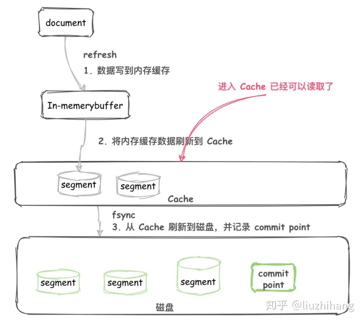
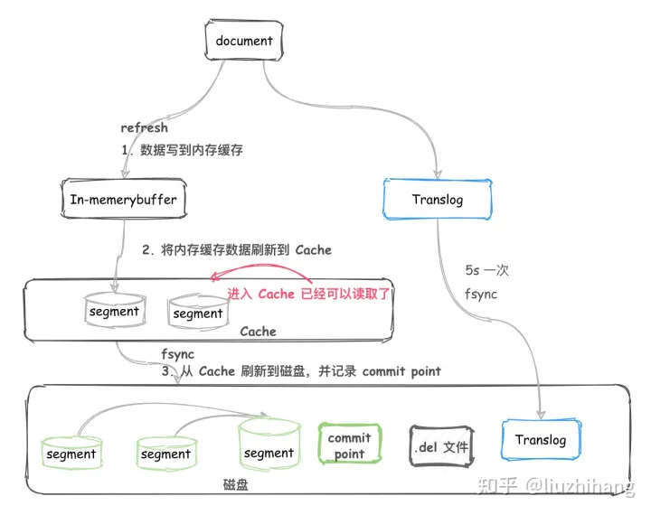

分片内部原理
分片是 最小的 工作单元 ，但是究竟什么 是 一个分片，它是如何工作的？ 在这个章节，我们回答以下问题:
- 为什么搜索是 NRT （近实时）
- 为什么 CRUD 是实时的
- 如何保证断电数据不丢失
- optimize、reflush、flush API 都做了什么，在什么情况下使用
Lucene 和 ES
Lucene
- Lucene 是 Elasticsearch所基于的 Java 库，它引入了按段搜索的概念。
- Segment： 段，类似于倒排索引，相当于一个数据集。
- Commit point：提交点，记录着所有已知的段。
- Lucene index：
a collection of segments plus a commit point。由一堆 Segment 的集合加上一个提交点组成。
ES
- 一个 Elasticsearch Index 由一个或者多个 shard （分片） 组成。
- 而 Lucene 中的 Lucene index 相当于 ES 的一个 shard。
段写入过程
内存->磁盘
- 不断将 Document 写入到 In-memory buffer （内存缓冲区）。
- 当满足一定条件后内存缓冲区中的 Documents 刷新到磁盘。
- 生成新的 segment 以及一个 Commit point 提交点。
这个 segment 就可以像其他 segment 一样被读取了。
问题：将文件刷新到磁盘是非常耗费资源的，而且在内存缓冲区和磁盘中间存在一个高速缓存（cache），一旦文件进入到 cache 就可以像磁盘上的 segment 一样被读取了。
内存->高速缓存区->磁盘
- 不断将 Document 写入到 In-memory buffer （内存缓冲区）。
- 当满足一定条件后内存缓冲区中的 Documents 刷新到 高速缓存（cache）。
- 生成新的 segment ，这个 segment 还在 cache 中。
- 这时候还没有 commit ，但是已经可以被读取了。
准实时
- 数据从 buffer 到 cache 的过程是定期每秒刷新一次。所以新写入的 Document 最慢 1 秒就可以在 cache 中被搜索到。
- 从 内存缓存到 磁盘高速缓存 过程叫 refresh、一般是1秒1次
使文档立即可见：
PUT /test/_doc/1?refresh
PUT /test/_doc/2?refresh=true

使文本可搜索
第一个要解决的问题是：使文本可搜索
倒排索引包含一个有序列表，有序列表包含所有文档中出现的不重复的词项，每个词项都包含它所出现文档的位置列表
Term | Doc 1 | Doc 2 | Doc 3 | ...
------------------------------------
brown | X | | X | ...
fox | X | X | X | ...
quick | X | X | | ...
the | X | | X | ...
我们讨论倒排索引时，由于历史原因，用来针对整个非结构化文档进行标引，而elasticSearch 是存在结构化的JSON文档，所以，针对elasticSearch 的每一个索引字段 都有自己的倒排索引
不变性
倒排索引写入磁盘后，是不可变的，不变性有价值：
- 无锁、没有数据竞争
- 增加操作系统缓存性能
- 利于其他缓存（filter）
- 存储数据可以压缩
当然，一个不变的索引也有不好的地方。主要事实是它是不可变的! 你不能修改它。如果你需要让一个新的文档 可被搜索，你需要重建整个索引。这要么对一个索引所能包含的数据量造成了很大的限制，要么对索引可被更新的频率造成了很大的限制。
动态更新索引
下一个要解决的问题是：如何保证在保证不变性的前提下，更新倒排索引：解决办法是使用更多索引
通过增加新的倒排索引 来反映 最近的变化。而不是重写整个倒排索引，每个倒排索引都会被查询到，从最早的开始，查询完后对结果集进行合并
Elasticsearch 基于 Lucene, 这个 java 库引入了 按段搜索 的概念：每段本身是一个倒排索引
Luence 还增加了提交点的概念：列出了所有已知段的 文件
一个 Lucene 索引包含一个提交点和三个段

每个段跟提交点 都是一个文件
逐段搜索会以如下流程进行工作：
- 新文档被收集到内存索引缓存
- 不时地, 缓存被 提交 ：
- 一个新的段—一个追加的倒排索引—被写入磁盘。
- 一个新的包含新段名字的 提交点 被写入磁盘。
- 磁盘进行 同步 — 所有在文件系统缓存中等待的写入都刷新到磁盘，以确保它们被写入物理文件。
- 新的段被开启，让它包含的文档可见以被搜索。
- 内存缓存被清空，等待接收新的文档。
当一个查询被触发，所有已知的段按顺序被查询。
词项统计会对所有段的结果进行聚合，以保证每个词和每个文档的关联都被准确计算。
这种方式可以用相对较低的成本将新文档添加到索引。
删除和更新
-
segment 不可改变，所以 docment 并不能从之前的 segment 中移除或更新。
-
所以每次 commit， 生成 commit point 时，会有一个 .del 文件，里面会列出被删除的 document（逻辑删除）。 而查询时，获取到的结果在返回前会经过 .del 过滤。
-
更新时，也会标记旧的 docment 被删除，写入到 .del 文件，同时会写入一个新的文件。此时查询会查询到两个版本的数据，但在返回前会被移除掉一个。
近实时搜索
背景
按段搜索 使得一个文档 从 索引到可搜索 的延迟 显著降低，通常需要几分钟，这还不够快。
原因
磁盘在这里成了瓶颈：
commit 一个新段到磁盘 需要一次 fsync fsync代价很大，每次索引都 fsync的话会造成性能问题
解决办法
在elasticSearch跟磁盘之间 是 文件系统缓存
在内存索引缓存区中的文档会被先写入到一个新的段中，这里的新段会被先写入到文件系统缓存，这一步代价比较低，稍后再被刷新到磁盘，这一步代价较高
只要文件在缓存中，就可以像其他文件一样被打开读取了
refreshAPI
在 Elasticsearch 中，写入和打开一个新段的轻量的过程叫做 refresh
默认情况下每个分片会每秒自动刷新一次
这就是为什么我们说 Elasticsearch 是 近 实时搜索
：文档的变化并不是立即对搜索可见，但会在一秒之内变为可见。
# 刷新（Refresh）所有的索引。
POST /_refresh
# 只刷新（Refresh） `blogs` 索引
POST /blogs/_refresh
当你在索引日志上，不关注实时性，但比较关注索引的速度，可以降低 刷新的频率
PUT /my_logs
{
"settings": {
"refresh_interval": "30s"
}
}
也可以在建立一个大型索引时，先关闭自动刷新
PUT /my_logs/_settings
{ "refresh_interval": -1 }
PUT /my_logs/_settings
{ "refresh_interval": "1s" }
持久化变更
-
如果没有 fsync 将文件系统缓存刷到磁盘， 则不能保证数据在断电甚至是程序正常退出之后仍然存在。
-
一次完整的提交 会将段刷到磁盘、并写入一个包含所有段列表的提交点，elasticSearch 在启动或重新打开一个索引的过程根据 这个提交点文件 判断哪些段属于当前分片
ElasticSearch 增加了 Translog 的概念，每次操作都会记录TransLog
流程如下：
- 文档被索引、添加到内存缓存区中，并写入 translog
- 分片每秒刷新（refresh）
- 内存缓存区的文档写入到新段中，且没有进行 fsync 操作
- 段被打开、可搜索
- 内存缓存区被清除
- 更多的文档被添加到 内存缓冲区和追加到事务日志中
- 每隔一段时间 索引被 flush
- 所有内存缓冲区的文档被写入一个新的段
- 缓冲区被清空
- 提交点被写入硬盘
- 文件系统 通过 fsync 刷新
- 老的 translog 被删除
translog 提供所有还没有被刷到磁盘的操作的一个持久化纪录。
当elasticSearch 启动时，会从磁盘中最后一个提交点去恢复已知的段：它会重放 translog 中 在这个提交点后发生的变更操作
Translog事务日志写入过程
- Document 不断写入到 In-memory buffer，此时也会追加 translog。
- 当 buffer 中的数据每秒 refresh 到 cache 中时，translog 并没有进入到刷新到磁盘，是持续追加的。
- translog 每隔 5s 会 fsync 到磁盘。
- translog 会继续累加变得越来越大，当 translog 大到一定程度或者每隔一段时间，会执行 flush。
实时CRUD
translog也提供 实时CRUD
当你试着通过ID查询、更新、删除一个文档 它会先尝试 检查 translog 任何最近的变更
flushAPI
执行一次提交、并截断translog 的行为在 elasticsearch 中被称作 一次 flush
分片每30分钟自动刷新（flush）
# 刷新（flush） blogs 索引。
POST /blogs/_flush
# 刷新（flush）所有的索引并且并且等待所有刷新在返回前完成。
POST /_flush?wait_for_ongoing
你很少需要自己手动执行 flush 操作；通常情况下，自动刷新就足够了。
在重启节点或关闭索引之前执行 flush 有益于你的索引
当 Elasticsearch 尝试恢复或重新打开一个索引， 它需要重放 translog 中所有的操作，所以如果日志越短，恢复越快。
Translog 有多安全?
translog 的目的是保证操作不会丢失。这引出了这个问题： Translog 有多安全？
translog的持久化
默认 translog 是每 5 秒被 fsync 刷新到硬盘， 或者在每次写请求完成之后执行(e.g. index, delete, update, bulk)
这意味着在整个请求被 fsync 到主分片和复制分片的translog之前，你的客户端不会得到一个 200 OK 响应。
在每次请求后都执行一个 fsync 会带来一些性能损失，尽管实践表明这种损失相对较小（特别是bulk导入，它在一次请求中平摊了大量文档的开销）。
但是对于一些大容量的偶尔丢失几秒数据问题也并不严重的集群，使用异步的 fsync 还是比较有益的。比如，写入的数据被缓存到内存中，再每5秒执行一次 fsync 。
这个行为可以通过设置 durability 参数为 async 来启用：
PUT /my_index/_settings
{
"index.translog.durability": "async",
"index.translog.sync_interval": "5s"
}
这个选项可以针对索引单独设置，并且可以动态进行修改。如果你决定使用异步 translog 的话，你需要 保证 在发生crash时，丢失掉 sync_interval 时间段的数据也无所谓。请在决定前知晓这个特性。
如果你不确定这个行为的后果，最好是使用默认的参数（ "index.translog.durability": "request" ）来避免数据丢失。
段合并
- 每 1s 执行一次 refresh 都会将内存中的数据创建一个 segment。
- segment 数目太多会带来较大的麻烦。 每一个 segment 都会消耗文件句柄、内存和cpu运行周期。更重要的是，每个搜索请求都必须轮流检查每个 segment ；所以 segment 越多，搜索也就越慢。
在 ES 后台会有一个线程进行 segment 合并。
- refresh操作会创建新的 segment 并打开以供搜索使用。
- 合并进程选择一小部分大小相似的 segment，并且在后台将它们合并到更大的 segment 中。这并不会中断索引和搜索。
- 当合并结束，老的 segment 被删除 说明合并完成时的活动：
- 新的 segment 被刷新（flush）到了磁盘。 写入一个包含新 segment 且排除旧的和较小的 segment的新 commit point。
- 新的 segment 被打开用来搜索。
- 老的 segment 被删除。
Elasticsearch通过在后台进行段合并来解决这个问题。小的段被合并到大的段，然后这些大的段再被合并到更大的段。
段合并的时候会将那些旧的已删除文档从文件系统中清除。被删除的文档（或被更新文档的旧版本）不会被拷贝到新的大段中。
合并大的段需要消耗大量的I/O和CPU资源，如果任其发展会影响搜索性能。Elasticsearch在默认情况下会对合并流程进行资源限制
optimize API
optimize API大可看做是 强制合并 API。它会将一个分片强制合并到 max_num_segments 参数指定大小的段数目。 这样做的意图是减少段的数量（通常减少到一个），来提升搜索性能。
在特定情况下，使用 optimize API 颇有益处。例如在日志这种用例下，每天、每周、每月的日志被存储在一个索引中。 老的索引实质上是只读的；它们也并不太可能会发生变化。
在这种情况下，使用optimize优化老的索引，将每一个分片合并为一个单独的段就很有用了；这样既可以节省资源，也可以使搜索更加快速：
POST /logstash-2014-10/_optimize?max_num_segments=1
请注意，使用 optimize API 触发段合并的操作不会受到任何资源上的限制。这可能会消耗掉你节点上全部的I/O资源, 使其没有余裕来处理搜索请求，从而有可能使集群失去响应。 如果你想要对索引执行 optimize，你需要先使用分片分配（查看 迁移旧索引）把索引移到一个安全的节点，再执行。
总结
主要介绍了内部写入和删除的过程，需要了解 refresh、fsync、flush、.del、segment merge 等名词的具体含义
